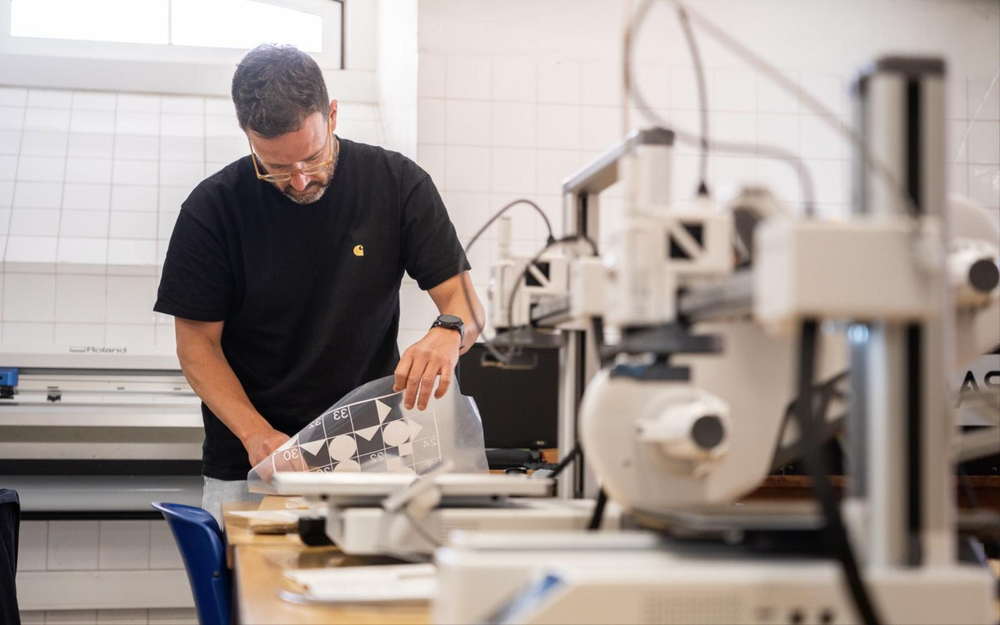

Bem-vindos à minha página de Recursos Abertos

Olá. Sou André Rocha, Professor Adjunto em Design de Produto e Fabricação Digital na Escola Superior de Educação de Lisboa (ESELx/IPL) e na ESES/IPS, e cofundador e coordenador científico do Fablab Benfica. Esta página é um repositório de recursos educativos que apoiam as Unidades Curriculares que leciono em ambas as instituições, combinando enquadramentos teóricos e práticas hands-on de fabricação digital.
O que vais encontrar aqui:
Materiais das UCs
Documentação completa para cada Unidade Curricular, incluindo objetivos de aprendizagem, enunciados de projetos, guias técnicos e critérios de avaliação.
Galerias de Trabalhos
Mostras dos projetos desenvolvidos pelos estudantes nas diferentes UCs — celebrando a vossa criatividade e competências técnicas coletivas.
Cursos Online de Apoio
NOOCs (Nano Open Online Courses) em regime de auto-aprendizagem, desenhados para complementar a tua formação, incluindo:
- Fundamentos de Fusion 360
- Técnicas e workflows de Fabricação Digital
- Práticas de documentação de projetos
Portfólio de Atividades
Coleção de exercícios, tutoriais e recursos práticos de fabricação digital para apoiar o teu percurso de aprendizagem hands-on.
Quer estejas aqui para rever conteúdos das UCs, explorar exemplos de projetos, ou desenvolver competências técnicas específicas, estes materiais foram criados para apoiar o teu percurso de aprendizagem em design e fabricação digital.
Vamos fazer, aprender e inovar juntos.